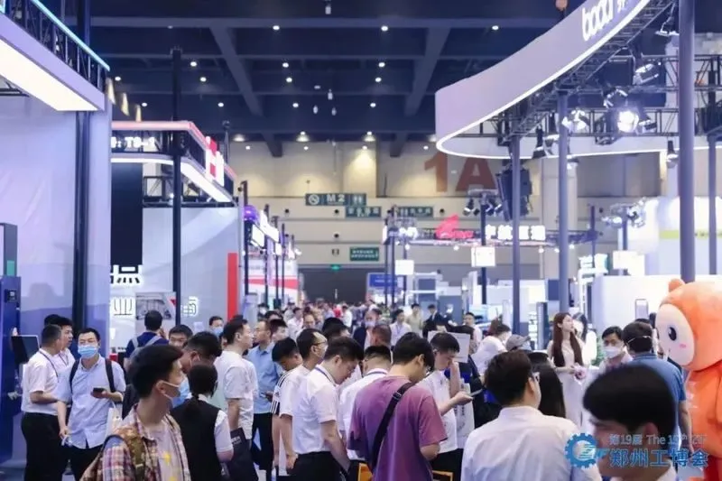
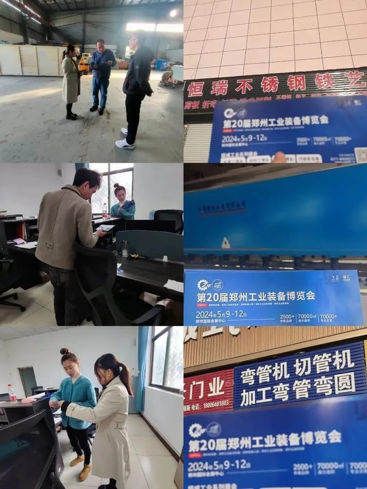
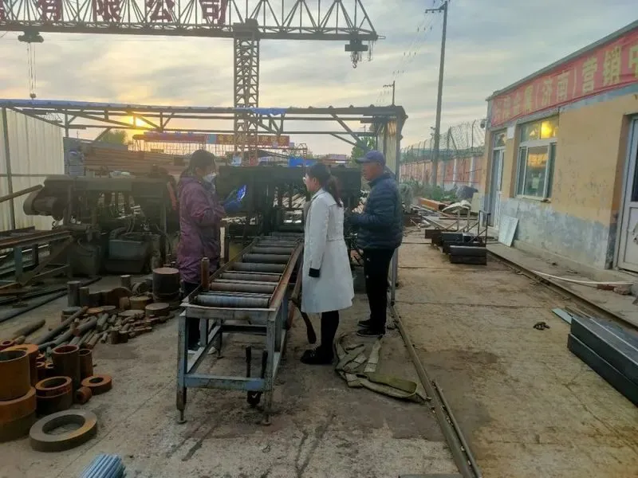
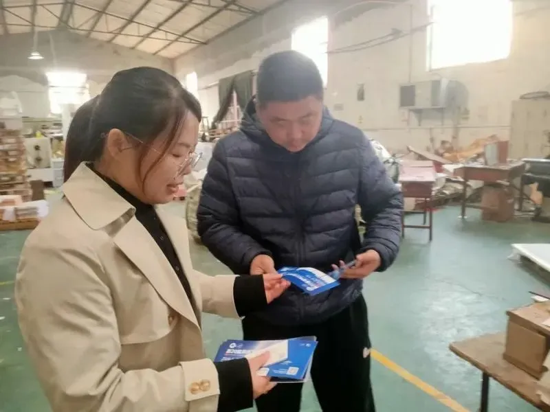
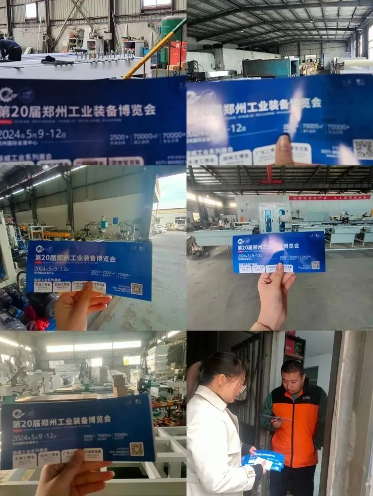

【2024郑州工博会】制造业工厂万里行—走进山东
首页 / 【2024郑州工博会】制造业工厂万里行—走进山东2024第20届郑州工业装备博览会（以下简称“郑州工博会”),将于2024年5月9-12日在郑州国际会展中心举办，展会设立机床展、激光钣金展、工业自动化展、机器人展、工业互联网展、五金机电展等主题展，展会规模近70000平方米，2500家业内知名企业参展，集中展示先进制造装备、整体解决方案、柔性制造单元、智能制造系统、数字化工厂等产业链创新技术，预计将吸引70000专业买家参观。

【制造业工厂万里行】郑州工博会观众组织团队在深入各大用户展会后，继续进行线下观众邀约。通过不断走访产业集聚地、产业园区、市场，与专业买家线下面对面交流，从而真实了解企业实际生产情况，精准对接观众需求。近日，观众组织团队奔赴山东济南，对当地机械制造、不锈钢、钢材加工等行业的观众一对一邀请，派发展会资料。



